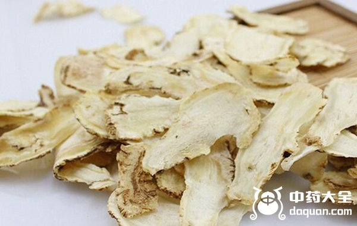
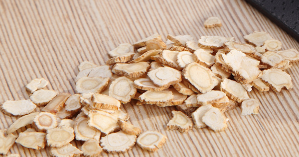
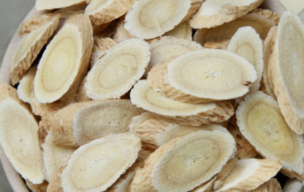
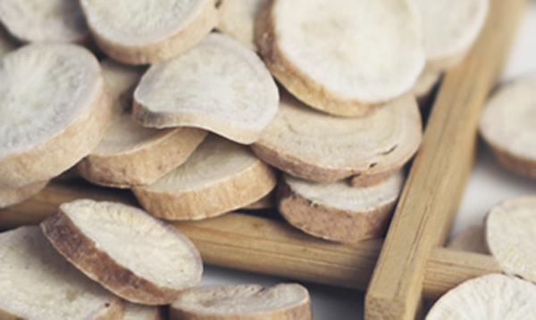

气血为人之根本，女人气血虚会引起失眠、消化不良、四肢无力，特别是产后的女性、久病的女性气血受到极大的流失，此时急需要补气血，下面中药大全为大家提供六款泡水就可以喝的，适合女人补气血的中药。
1、当归泡水

当归泡水具有补血和血的功效，主要以养血安神为主。对于女人痛经的女人而言还可以缓解痛经、月经不调等症状，对心血虚的女性，对心悸、健忘、失眠、心神不宁等症状都有所缓解，对女补气养血的中药当归首选。具体请查看更多关于当归的功效与作用......【查看详情】
2、太子参泡水

太子参泡水具有补气益血、滋养强壮、健脾生津的功效，适用于免疫力差，体质虚弱的阴虚者，用太子参泡水可以缓解伤津口渴，阴虚咳嗽的症状，因此是十分适合女人补气血的中药，更多太子的功效与作用......【查看详情】
3、生地黄泡水
生地黄泡水具有滋阴养血、养阴生津的功效，对于经常失眠、睡眠不佳、便秘、皮肤敏感的女性十分适合用生地黄泡水来滋阴养血，改善症状，查看更多关于生地黄的功效与作用......【查看详情】
4、黄芪泡水

黄芪泡水具有补气升阳的作用，黄芪对于补气升阳、利水消肿、托毒排脓、固表止汗、补中益气、温养脾胃有着很好的功效，适用于产妇茶后虚弱、久病或者慢性病的人群，经常用黄芪泡水喝的女性面色红润有光泽，但好处不仅仅只有让女人变美，具体请查看更多关于黄芪的功效与作用......【查看详情】
5、白芍泡水

白芍泡水有养血柔肝、缓中止痛、敛阴收汗的功效，对女人而言主要用来养血补阴，同时也作用于腹痛、痛经、眩晕、耳鸣等症状，是养肝养血的一味好中药，具体请查看更多关于白芍的功效与作用......【查看详情】
6、首乌泡水
首乌泡水具有养血祛风、滋阴强壮、补益肝肾的功效，主要适用于肝肾阴亏、腰膝酸软、发须早白的症状，对于血虚体弱、虚不受补的女性而言是一味十分适合的中药，了解更多关于首乌的功效与作用......【查看详情】
结语：补气养血的中药有很多，以上当归、太子参、生地黄、黄芪、白芍、首乌泡水既简单效果又好，是非常适合女性补气养血的中药。